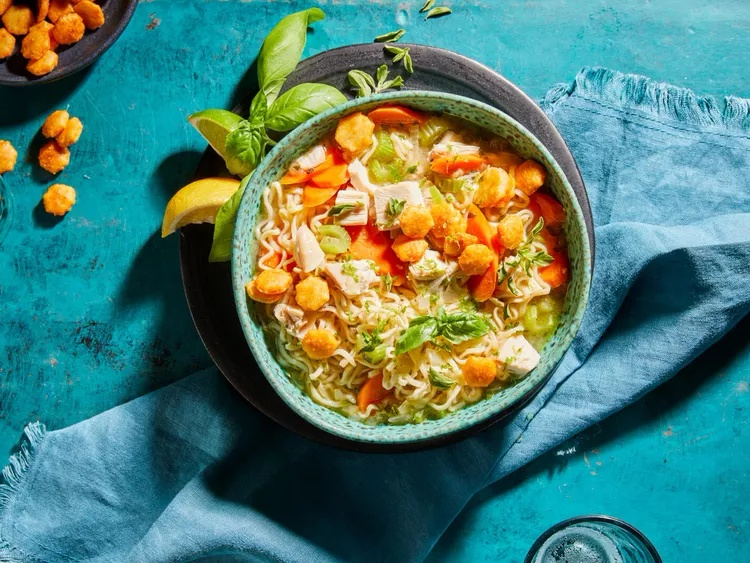

Chicken Ramen Noodle Soup with Honey Sriracha Crackers

Descripton:
This comforting chicken ramen noodle soup is served with homemade honey Sriracha crackers for crunch and extra flavor.
Ingredients:
Soup:
- 2 tablespoons olive oil
- ¾ cup thinly sliced carrot
- ¾ cup sliced celery
- ¾ cup chopped onion
- 1 teaspoon grated fresh ginger
- 2 cloves garlic, minced
- 4 cups low-sodium chicken broth
- 1 tablespoon reduced-sodium soy sauce
- 2 teaspoons chopped fresh basil
- 2 teaspoons chopped fresh oregano
- ¼ teaspoon ground black pepper
- 2 cups cubed cooked chicken
- 2 (3 ounce) packages ramen noodles with seasoning packet
- 1 tablespoon lime juice
- ¼ teaspoon lime zest, or to taste
Honey Sriracha Crackers:
- 2 tablespoons canola oil
- 2 tablespoons butter
- 2 tablespoons honey
- 2 tablespoons Sriracha sauce
- 9 ounces oyster crackers
Steps:
Soup:
- Heat oil in a Dutch oven over medium heat. Add carrot, celery, and onion. Cook until crisp-tender, about 5 minutes. Add ginger and garlic. Cook 1 minute more. Add broth, soy sauce, basil, oregano, and pepper. Bring to a boil. Reduce heat and simmer, covered, until carrots are just tender about 5 minutes.
- Stir in cooked chicken and ramen noodles. Simmer, uncovered, until noodles are tender, 3 to 5 minutes. Stir in lime juice. Ladle soup into bowls. Sprinkle with lime zest and, if you like, additional basil and oregano leaves, and serve with Honey-Sriracha Crackers.
Honey-Sriracha Crackers:
- Preheat the oven to 400 degrees F (200 degrees C). Line a 10x15-inch baking pan with foil.
- Heat canola oil and butter in a large saucepan over medium heat until butter is melted, 1 to 2 minutes. Whisk in honey, Sriracha, and 1 1/2 teaspoons of the reserved ramen seasoning packet. Bring to a boil. Remove from heat and stir in oyster crackers. Toss together until evenly coated.
- Transfer crackers to the prepared pan and spread to an even layer.
- Bake in the preheated oven, stirring once, until light golden and crisp, 8 to 10 minutes. Remove from heat and cool completely (crackers will continue to crisp as they cool). Store crackers in an airtight container at room temperature up to 2 weeks.
Cook's Note:
You can use lemon juice and zest instead of lime for the soup.
Go back to main page